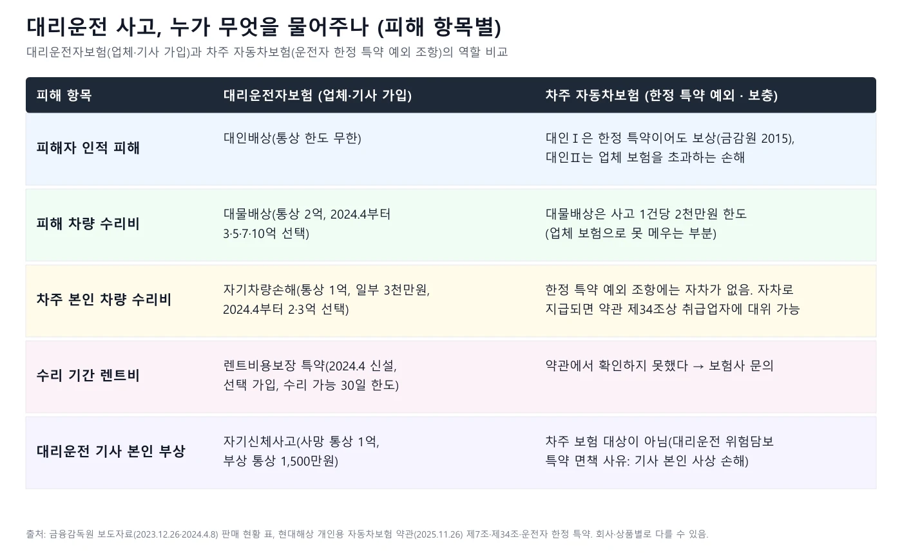
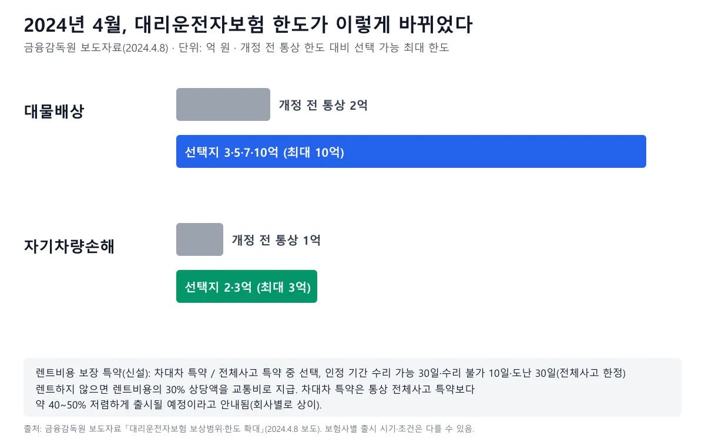
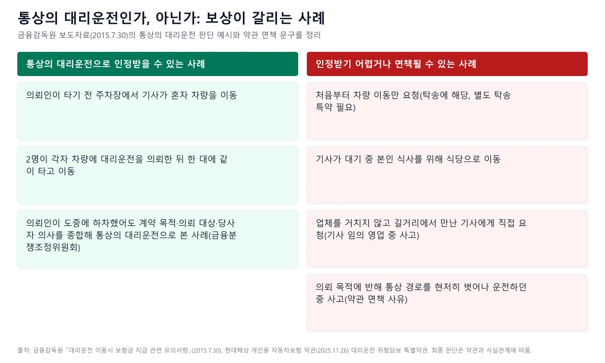
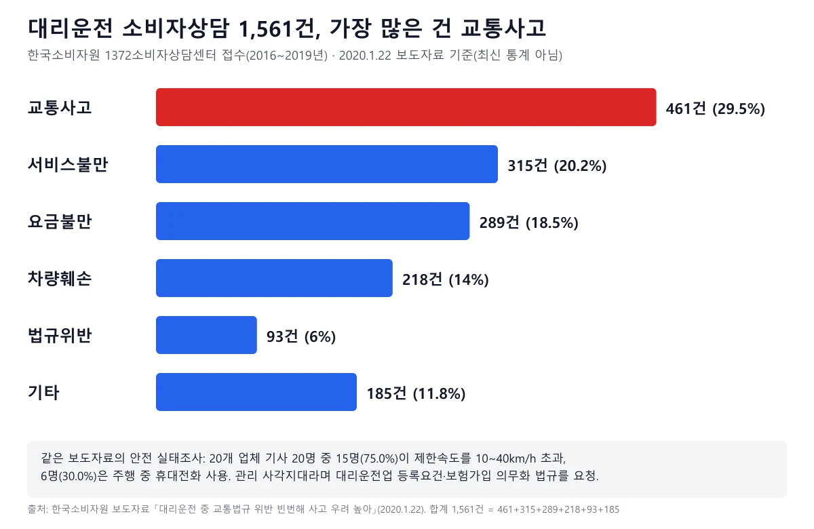
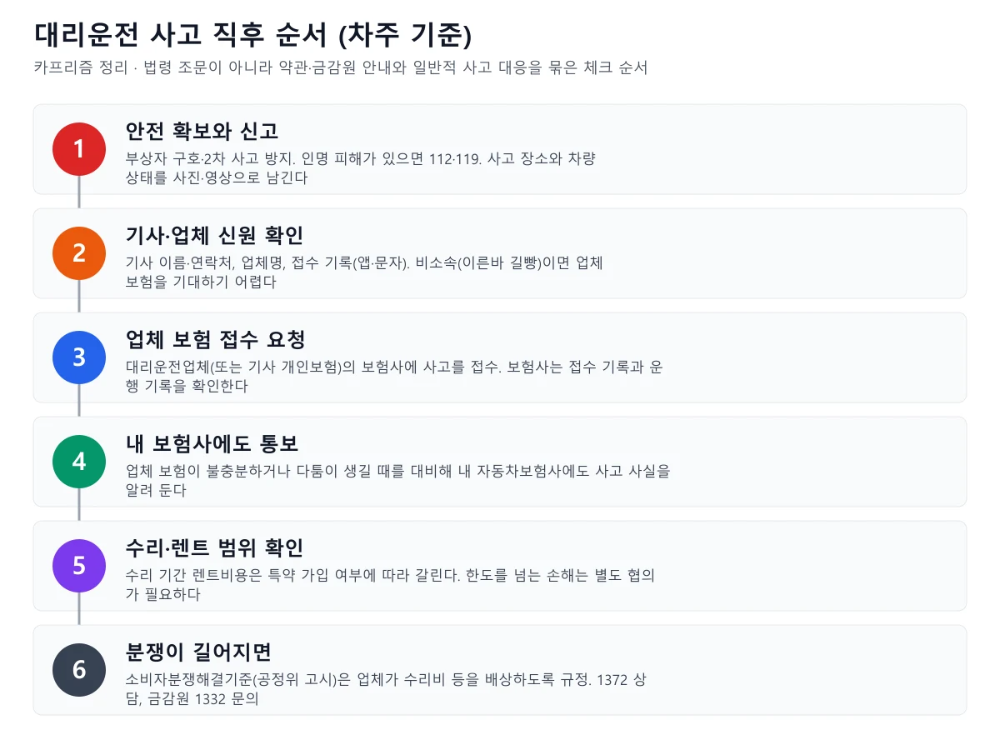
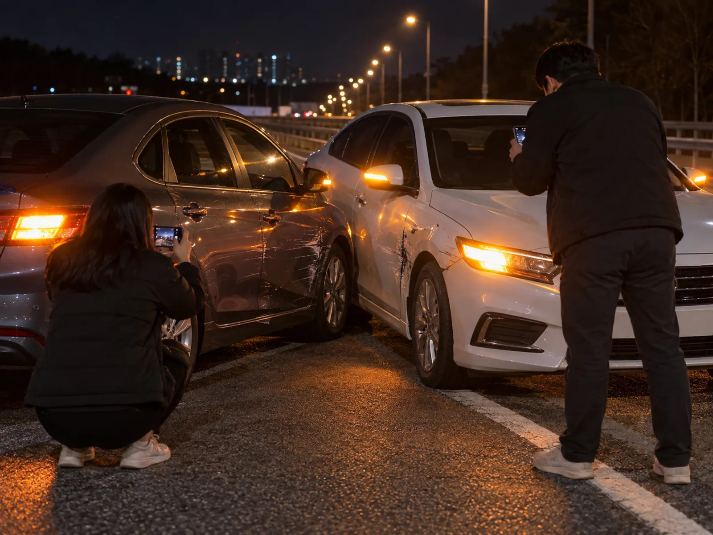
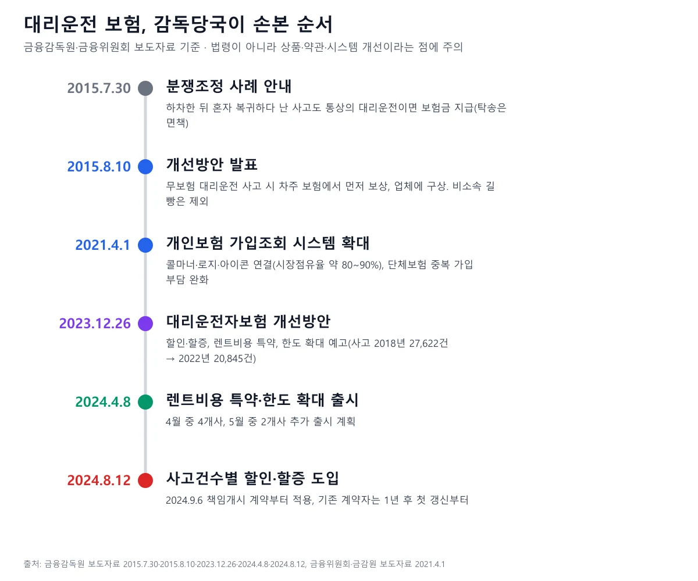

▲ 대리운전 기사에게 차를 맡기는 밤의 장면을 표현한 AI 생성 이미지(예시, 실제 사건·장소 아님). 대리운전 사고 보상은 법령이 아니라 보험 약관과 금감원 개선 조치가 겹겹이 만든 구조 위에 있다 ⓒ CarPrism (AI 생성 이미지)
"대리기사가 사고를 냈는데, 이거 내 보험으로 해야 하나요?" 술을 마신 날 대리운전을 부르는 사람이라면 한 번쯤 해 볼 법한 걱정이다. 2026년 10월 13일 기준으로 먼저 짚을 사실이 하나 있다. 국가법령정보센터 Open API로 여객자동차 운수사업법과 시행령 현행 원문을 내려받아 확인한 결과, 대리운전업체에 보험 가입을 강제하거나 대리운전업을 등록제로 규율하는 조문은 찾지 못했다. 여객자동차 운수사업법에서 "대리운전"이라는 단어가 나오는 곳은 렌터카 임차인에게 운전자를 알선하는 예외(제34조제2항제2호, 제34조의5 단서 제2호가 이를 인용)뿐이었다. 법제처 법령명 검색에서 법령 이름에 "대리운전"이 들어간 현행 법령은 0건이었다. 한국소비자원도 2020년 보도자료에서 대리운전업 등록요건과 보험가입 의무화 법규가 필요하다고 요청한 바 있다. 그래서 대리운전 사고 보상은 법이 아니라 자동차보험 약관, 대리운전자보험 상품, 금융감독원의 개선 조치, 공정거래위원회 소비자분쟁해결기준이 만든 여러 겹의 구조 위에 서 있다. 이 글은 그 겹이 어떻게 맞물리는지, 어디서 보상이 끊기는지를 공식 문서 기준으로 정리했다. 발렛파킹과 운전자한정 특약의 일반 규칙은 운전자한정 특약 기사에서 다뤘다. 주차 대행·세차 중 파손의 책임은 발렛파킹·세차 파손 책임 기사를 참고하자.
1. 먼저 전제 확인 — 대리운전업체의 보험 가입은 법으로 강제되나
현행 법령에서 대리운전업체의 보험 의무 가입 조문은 확인하지 못했다. 이 주제를 다룰 때 흔히 "업체가 보험에 가입해야 영업할 수 있다"고 알고 있지만, 직접 열어 본 법령에는 그런 문장이 보이지 않았다. 확인한 범위는 아래와 같다. 여객자동차 운수사업법 원문 바로가기
| 확인 대상 | 결과 |
|---|---|
| 여객자동차 운수사업법(2026.7.1 시행분) | 대리운전업 등록·보험 의무 조문은 찾지 못했다. "대리운전"이라는 단어는 제34조(유상운송의 금지 등) 제2항 제2호에 나온다(제34조의5 단서 제2호는 "제34조제2항제2호에 따라 알선하는 경우"로 인용만 한다). 임차인이 주취·신체부상 등으로 직접 운전하지 못할 때 「소득세법」 제173조제1항에 따라 대리운전 용역제공자에게 사업장을 제공하는 자가 운전자를 알선하는 경우를 예외로 둔다 |
| 같은 법 시행령(2026.7.7 시행분) | "대리운전"이 나오는 곳은 개인택시 운송사업자 관련 과태료 부과기준(제49조 별표) 한 곳이었고, 대리운전업 규율 조문은 아니다 |
| 한국소비자원 보도자료(2020.1.22) | "대리운전 안전사고 예방·관리를 위한 규정이 없어 관리 사각지대"라며 국토교통부·경찰청에 법규 마련을 요청했고, 법규에 대리운전업 등록요건과 보험가입 의무화 등이 담겨야 한다는 입장을 밝혔다 |
| 국회 계류 법안 현황 | 확인하지 못했다. 국회 의안정보시스템에서 직접 확인해야 한다 |
법이 비어 있다고 해서 보상이 없다는 뜻은 아니다. 대리운전업체는 보통 대리운전자보험(단체보험)에 가입하고, 업체는 보험에 가입한 기사에게 콜을 배정한다. 금감원 자료도 "대리운전업체는 대리운전보험에 가입되어 있는 운전기사에게 대리운전콜을 배정하므로 보험에 가입하지 못한 운전기사는 대리운전업 종사가 곤란"하다고 설명한다. 즉 의무는 법이 아니라 업계 관행과 시장 구조에서 나온다. 그래서 업체가 정말 가입했는지, 어떤 보험인지는 이용자가 따로 확인해야 하는 사항이다.
▲ 밤 보도에서 스마트폰으로 대리운전을 호출하고 기다리는 장면(AI 생성 이미지, 예시). 앱·전화로 부를 때 업체의 보험 가입 여부는 이용자가 직접 확인해야 한다 ⓒ CarPrism (AI 생성 이미지)
📍 이 글에서 "대리운전"이라는 말의 범위
약관은 대리운전을 "피보험자(차주)가 차에 탑승한 상태에서 대리운전자가 운전해 요청 장소까지 이동하고 그에 상응하는 금액을 수수하는 일련의 과정"으로 정의하고, 차주가 타지 않은 채 차만 옮기는 탁송은 대리운전에 해당하지 않는다고 적는다(현대해상 개인용 약관 대리운전 위험담보 특별약관). 이 정의가 뒤에 나오는 보상 갈림길의 출발점이다.
2. 사고가 나면 누구에게 청구하나 — 겹겹의 보상 구조
청구 대상은 기사 개인, 업체, 업체가 든 보험, 차주 자신의 보험으로 갈린다. 자동차손해배상 보장법 제3조는 "자기를 위하여 자동차를 운행하는 자"가 그 운행으로 사람을 사망·부상하게 하면 손해를 배상할 책임을 진다고 정한다. 대리운전을 맡겨도 차의 소유 명의인과 의뢰인이 운행자 지위를 유지한다고 본 판결이 있다. 대법원 2009.5.28. 선고 2007다87221 판결은 술을 마셔 대리운전을 의뢰한 사람이 빌린 차에 동승했다가 다친 사안에서, 대리운전자와의 내부관계에서는 단순 동승자로 '다른 사람'에 해당하지만 차를 빌려 준 기명피보험자(소유 명의자)와의 관계에서는 '다른 사람'으로 볼 수 없어 책임보험금 지급 의무가 없다고 보았다(원심 파기환송). 대법원 2007다87221 판결 바로가기 또 같은 법 제5조제1항·제2항은 자동차보유자에게 책임보험(대인)과 대물 보험 가입 의무를 두고, 대물 금액은 시행령 제3조제3항이 사고 1건당 2천만 원의 범위로 정한다. 자동차손해배상 보장법 바로가기
| 주체 | 책임·보상의 근거 | 한계 |
|---|---|---|
| ① 대리운전자보험(업체 단체보험 또는 기사 개인보험) | 대인·대물·자차·자기신체를 담보. 판매사 7곳(KB·DB·현대·하나·삼성·메리츠·롯데), 단체보험은 업체가 계약자, 개인보험은 업체 제한 없이 보상 | 단체보험은 해당 업체 콜 운행만 보상. 한도·면책은 상품별로 다르다 |
| ② 대리운전 사업자(업체) | 소비자분쟁해결기준이 업체의 수리비·과태료·범칙금 배상, 부당대금 환급을 규정. 소비자원 분쟁조정은 민법 제756조(사용자책임)를 적용한 사례가 있다 | 기준은 합의·권고의 기준. 사용자·피용자 관계 인정은 사안별 판단 |
| ③ 차주의 자동차보험 | 운전자 한정 특약의 예외 조항으로 대인Ⅱ·대물 보상(업체 보험 초과분, 대물 2천만 원 한도) | 사업자등록한 취급업자 업무 중 사고에 한정. 자차·자기신체는 예외에 열거되지 않았다 |
| ④ 기사 개인·차주 개인 부담 | 위 보상으로 메우지 못한 손해 | 무보험 길거리 기사 사고는 차주가 개인 부담으로 피해자 손해를 배상해야 할 수 있다고 금감원이 안내 |

▲ 피해 항목별 보상 주체. 대물은 차주 보험이 2천만 원까지 보충하고, 렌트비는 대리운전자보험의 선택 특약 가입 여부에 달렸다 카프리즘 제작 도표
3. 대리운전자보험 읽는 법 — 단체·개인, 담보와 한도
대리운전자보험은 업체가 드는 단체보험과 기사가 드는 개인보험 두 갈래다. 금감원 2023년 12월 자료에 따르면 단체보험은 대리운전업체가 계약자 겸 피보험자이고 기사는 운전피보험자로 등재되며 특정 업체를 통한 운행만 보상한다. 개인보험은 기사 개인이 계약자로 업체 제한 없이 대리운전 중 사고를 보상한다. 2021년에는 개인보험 가입 여부를 업체가 조회할 수 있는 시스템(driver.kidi.or.kr)이 열려 단체보험 중복 가입 부담을 줄였다. 금융위·금감원 자료는 단체보험 2개 가입 시 연 약 200만 원, 개인보험 1개 가입 시 연 약 100만 원이라는 예를 든다. 금감원 2023.12 개선방안 보도자료 바로가기
| 담보 | 보장 범위 | 통상 한도 | 2024.4 이후 선택 가능 |
|---|---|---|---|
| 대물배상 | 피해 차량 | 2억 원(일부 1억 원) | 3·5·7·10억 원 |
| 자기차량손해 | 차주 차량 | 1억 원(일부 3천만 원) | 2·3억 원 |
| 대인배상 | 차주와 피해자 | 통상 무한 | 변경 없음 |
| 자기신체사고 | 대리운전자 본인 | 사망 통상 1억 원, 부상 통상 1,500만 원 | 변경 없음 |
한도가 중요한 이유는 고가 차량 사고에서 한도를 넘는 손해가 기사 개인 부담이 되기 때문이다. 금감원이 든 사례가 있다. 차량가액 2억 3천만 원인 고가 외제차가 전손이고 기사 과실이 100%인데 기사가 자기차량손해를 1억 원만 가입했다면, 자차 보험 처리는 1억 원이고 기사 개인 부담이 1억 3천만 원이다. 차주 입장에서는 이 경우 기사가 부담을 이행할 수 있는지가 현실적인 문제가 된다. 금감원 2024.4 한도 확대 보도자료 바로가기

▲ 대물배상은 통상 2억 원에서 최대 10억 원, 자기차량손해는 통상 1억 원에서 최대 3억 원까지 선택할 수 있게 됐다(2024.4.8 금감원 보도자료) 카프리즘 제작 도표
렌트비용 보장 특약 — 차주 렌트비는 누가 내나
과거에는 대리운전자보험이 수리 기간 차주의 렌트비용을 보상하지 않아 차주가 렌트비를 요구하면 기사가 개인 비용으로 부담해야 했다. 2024년 4월부터 보험사들이 선택 가입 방식의 렌트비용 보장 특별약관을 출시했다. 출시 일정은 4월 중 DB·현대·삼성·롯데, 5월 중 메리츠·KB로 안내됐다(책임개시일 기준 DB 4.12, 삼성 4.26 등).
| 구분 | 차대차 특약 | 전체사고 특약 |
|---|---|---|
| 보장 내용 | 피보험자동차와 다른 차의 충돌 사고로 발생한 렌트비용 | 피보험자동차 사고로 발생한 렌트비용(단독사고 포함) |
| 렌트하는 경우 | 동급 국내산 자동차를 빌리는 데 드는 통상 요금(일부 회사는 차종별 한도금액 내 지급) | |
| 렌트하지 않는 경우 | 렌트비용의 30% 상당액을 교통비로 지급 | |
| 인정 기간 | 수리 가능 30일, 수리 불가 10일 | 수리 가능 30일, 수리 불가 10일, 도난 30일 |
| 보험료 | 통상 차대차 특약이 전체사고 특약보다 약 40~50% 저렴하게 출시될 예정이라고 안내(회사별 상이) | |
🧮 계산 예시(가정) — 렌트비용 특약이 있을 때
하루 렌트 요금이 7만 원이고 수리 가능 판정으로 12일 걸렸다면 12일 × 7만 원 = 84만 원이 30일 한도 안이므로 산술상 인정 범위다. 렌트하지 않고 버텼다면 렌트비용 84만 원의 30%인 25만 2천 원이 교통비로 나가는 구조다. 수리 불가 판정이면 한도가 10일이라 10일 × 7만 원 = 70만 원까지다. 요율과 일수는 설명용 가정이며, 실제 지급은 보험사 약관 심사에 따른다. 상대 보험사 렌트 기준은 렌트비 청구 기준 기사에서 다뤘다.
4. 내 자동차보험은 어디까지 — 운전자 한정 특약과 대리운전 위험담보 특약
내 보험의 역할은 "업체 보험이 못 메우는 구멍을 제한적으로 메우는 것"에 가깝다. 배경은 2015년 금감원 개선방안이다. 당시 자료는 국민 다수가 운전자 범위를 제한하는 한정 특약에 가입(2014년 말 가입률 99%)했고, 대리운전기사가 무보험이면 한정 특약 가입 차주가 대인Ⅰ 초과 인적 피해와 물적 피해를 개인 비용으로 배상해야 한다는 문제를 짚었다. 그래서 추가 보험료 없이 차주 보험사가 먼저 보상한 뒤 대리운전업체에 구상하도록 한정 특약을 고치겠다고 밝혔다. 금감원 2015.8 개선방안 바로가기
현재 약관에서 이 취지에 해당하는 문구는 이렇게 확인된다. 현대해상 개인용 자동차보험 약관(2025.11.26)의 운전자 한정 운전 특별약관은 증권에 적힌 범위 밖의 운전자 사고를 원칙적으로 보상하지 않으면서, "관련법규에 의해 사업자등록을 한 자동차 취급업자가 업무상 위탁받은 피보험자동차를 사용하거나 관리하던 중" 사고 중 대인배상Ⅱ·대물배상에서 보상하는 손해는 지급한다고 정한다. 단서가 붙는다. 취급업자가 가입한 보험에서 보험금이 지급될 수 있으면 그 보험금을 초과하는 손해를 보상하고, 대물배상은 자동차손해배상 보장법 제5조·시행령 제3조가 정한 금액(1건 2천만 원)을 한도로 한다. 약관의 "자동차 취급업자" 정의에는 대리운전업이 명시돼 있고, 대인Ⅱ·대물 피보험자 정의에서 취급업자가 업무상 위탁받은 차를 쓰는 경우는 승낙피보험자·운전피보험자에서 빼는 단서도 있다(제7조). 현대해상 개인용 자동차보험 약관 PDF 바로가기
| 구분 | 개선 전 | 개선 후 |
|---|---|---|
| 대인배상Ⅰ | 보상 | 보상 |
| 대인배상Ⅱ | 보상되지 않음 | 보상 |
| 대물배상(의무보험 한도) | 보상되지 않음 | 보상 |
| 대물배상(의무보험 초과) | 보상되지 않음 | 보상되지 않음 |
| 자기차량손해·자기신체손해 | 보상되지 않음 | 보상되지 않음 |
핵심 숫자는 대물 2천만 원이다. 금감원은 2015년 당시 대물 의무보험 한도가 건당 1천만 원이고 2016년 4월부터 2천만 원이 된다고 안내했고, 현행 시행령 제3조제3항은 사고 1건당 2천만 원의 범위로 규정한다. 따라서 업체 보험이 없거나 부족한 상태에서 고가 차량을 들이받았다면, 차주 보험이 메워 주는 대물은 2천만 원이 상한이고 초과분은 차주 개인 부담이 될 수 있다고 금감원이 소비자 주의사항으로 적었다.
🧮 계산 예시(가정) — 대물 피해 3,500만 원일 때 차주 보험의 몫
사례 A, 업체 보험이 3,000만 원 지급 가능: 손해 3,500만 원에서 업체 보험 3,000만 원을 빼면 초과 500만 원이 남는다. 약관 문구상 이 초과분은 차주 보험 대물(2천만 원 한도 안)로 보상되는 구조다. 사례 B, 업체 보험 없음(비소속·무보험 기사): 약관 예외가 사업자등록한 취급업자 업무를 전제로 하므로 적용 자체가 어려울 수 있고, 적용되더라도 한도는 2천만 원이라 1,500만 원 이상은 개인 부담 위험이 있다. 위 수치는 약관 문구를 산술로 옮긴 설명용이며, 실제로는 과실 비율과 차주의 배상책임 성립 여부가 먼저 심사된다.
대리운전 위험담보 특약 — 차주가 따로 가입하는 선택지
같은 약관에는 대리운전 위험담보 특별약관도 있다. 피보험자(차주)의 요청으로 대리운전자가 대리운전하던 중(주차·정차 중 제외) 일어난 사고에서 그 대리운전자를 보통약관의 피보험자로 보아 보상하고, 이때는 운전자연령 한정·운전자 범위 한정 특약을 적용하지 않는다. 대신 면책이 분명하다. 피보험자가 요청한 목적에 반해 통상 경로를 현저히 벗어난 운전, 대리운전자 이외의 사람이 운전한 사고, 대리운전자 본인이 피보험자동차 사고로 죽거나 다친 손해, 대리운전자가 무보험자동차에 의해 죽거나 다친 손해는 보상하지 않는다. 이 특약의 면책 목록에는 자기차량손해 제외가 없지만, 자차까지 보상받는지는 증권과 약관으로 확인해야 한다. 회사마다 다르다는 점은 다른 약관을 열어 확인했다. 삼성화재 개인용 약관(2025.11.16 개정)은 한정 특약 예외 조항이 현대해상과 같은 구조(사업자등록한 취급업자 업무 중 사고의 대인배상Ⅱ·대물배상, 취급업자 보험 초과분, 대물은 자동차손해배상 보장법 시행령 제3조 금액 한도)이고, 별도로 「대리운전 중 사고 보상 특별약관」이 자기신체사고·무보험자동차에 의한 상해·자기차량손해까지 보상하되 다른 대리운전업자 보험이 지급할 수 있는 금액을 넘는 손해만 보상한다고 적는다. 삼성화재는 안내문에서 "차주에게 운행자책임이 있어야 하고 취급업자가 사업자등록을 하지 않은 경우 보상이 되지 않는다"고 밝힌다. 반면 AXA손해보험 개인용 약관(개정일 확인 못 함)은 특약 문구와 면책 범위가 또 다르다. DB손해보험·KB손해보험 약관 원문은 확보하지 못해 확인하지 못했다. 증권의 특약 목록과 상담원 확인이 필요하다.
자차(내 차 수리비)는 별도 문제다. 위 한정 특약의 예외 조항에는 자기차량손해가 열거돼 있지 않아, 이 조항만으로는 자차가 보상되지 않는다(위 대리운전 특약 가입 여부에 따라 달라질 수 있다). 자기차량손해로 보험금이 지급된 경우에는 약관 제34조(보험회사의 대위)가 "자동차 취급업자가 업무로 위탁받은 피보험자동차를 사용하거나 관리하는 동안에 사고를 낸 경우"에 보험회사가 피보험자의 권리를 취득(구상)한다고 정한다. 쉽게 말해 내 자차 담보로 먼저 고쳐도 보험사가 업체·기사 쪽에 청구할 수 있다는 뜻이다. 이 경우 차주의 할증·등급 영향은 약관상 공식 근거를 확인하지 못했다. 자차 처리와 직접 부담의 손익은 자차 처리 손익분기 기사, 할증 체계는 할증 제도 기사를 참고하자.
5. 보상이 갈리는 지점 — 통상의 대리운전, 탁송, 길거리 기사
같은 사고라도 "통상의 대리운전"인지에 따라 보험금 지급이 갈린다. 금감원 2015년 7월 보도자료는 금융분쟁조정위원회 사례를 소개했다. 의뢰인 A가 업체에 일일 대리운전을 요청했고 기사 B가 운행하던 중 A가 개인 사정으로 내렸다. B가 혼자 출발지로 복귀하다 졸음운전 추돌 사고를 냈고, 업체의 보험사는 의뢰인이 타지 않은 상태의 사고라며 면책사유인 '탁송'에 해당한다고 지급을 거부했다. 위원회는 계약의 목적, 의뢰의 대상, 계약 당사자의 의사를 종합해 판단해야 하고 의뢰인의 동승 여부만으로 판단하는 것은 부적절하다며 통상의 대리운전에 해당한다고 보아 보험금을 지급하는 것이 타당하다고 결정했다. 금감원 2015.7 유의사항 보도자료 바로가기

▲ 통상의 대리운전으로 인정되는 사례와 인정받기 어려운 사례. 금감원은 대부분의 기사가 통상의 대리운전만 보상하는 보험에 가입돼 있다고 안내했다 카프리즘 제작 도표
| 상황 | 왜 문제가 되나 | 근거 |
|---|---|---|
| 처음부터 차량 이동만 요청 | 탁송은 대리운전 보험의 면책 대상. 사전에 업체에 알려 탁송 특약에 가입된 기사를 배정받아야 한다 | 금감원 2015.7.30, 약관 정의 |
| 길거리에서 만난 기사에게 직접 요청 | 업체 접수 기록이 없어 통상의 대리운전으로 인정받지 못할 수 있고, 기사가 임의로 영업하던 중 사고는 보상되지 않는다고 안내 | 금감원 2015.7.30·8.10 |
| 기사가 식사 등 사적 이동 | 대기 중 본인 식사를 위해 식당으로 이동하던 중 사고는 통상의 대리운전으로 인정받기 어려운 예 | 금감원 2015.7.30 |
| 목적에 반해 경로를 현저히 이탈 | 대리운전 위험담보 특약의 면책 사유 | 현대해상 약관(2025.11.26) |
| 다른 업체 콜로 운행 중 사고 | 단체보험은 해당 업체 대리운전 중 사고만 보상한다. 개인보험은 업체 제한 없이 보상 | 금융위·금감원 2021.4.1 FAQ |
2015년 8월 자료는 한 가지를 더 짚었다. 보험사는 대리운전 사고를 보상할 때 고객이 대리운전을 의뢰한 접수 기록과 운행 기록을 확인한다. 그래서 이용자는 대리운전업체에 직접 전화(또는 앱)로 의뢰해 기록을 남기는 편이 안전하다고 안내했다. 앱 호출 화면, 결제 문자, 기사 배정 문자는 사고 뒤 가장 먼저 보관할 증거가 된다.
6. 업체 책임과 분쟁 기준 — 소비자분쟁해결기준과 소비자원 사례
보험으로 해결되지 않는 몫은 업체 책임 기준으로 다툴 수 있다. 공정거래위원회 고시 소비자분쟁해결기준(고시 제2025-14호, 2025.12.18 시행)에는 "④대리운전(1개 업종)" 항목이 있고 분쟁 유형별 해결 기준이 세 가지로 정해져 있다. 소비자기본법 제16조제3항은 이 기준이 분쟁당사자 사이에 별도 의사표시가 없는 경우에 한해 합의 또는 권고의 기준이 된다고 정한다. 소비자분쟁해결기준 바로가기
| 분쟁 유형 | 해결 기준 |
|---|---|
| 대리운전 기사의 운행 중 발생한 차량파손 등 물적 손해 | 대리운전 사업자가 차량 수리비 등 피해액 배상 |
| 기사의 운행 중 발생한 과태료 및 범칙금 피해 | 대리운전 사업자가 해당 과태료 또는 범칙금 배상 |
| 부당한 대금 청구 | 대리운전 사업자가 청구 취소 또는 부당 대금 환급 |
실제 분쟁조정 사례도 있다. 한국소비자원 결정 사례에서 신청인은 2012년 새벽 부산 해운대에서 울산까지 대리운전을 의뢰했고, 기사의 운전 미숙으로 인도 블록에 부딪혀 타이어·휠·뒤 범퍼가 파손됐다. 수리 6일간 렌트비 하루 7만 원씩 총 42만 원이 들었고, 수리비 중 자차 면책금 30만 원은 기사가 지급했으며 나머지는 보험 처리됐다. 업체는 기사와 사용자·피용자 관계가 없다며 거절했지만, 소비자원은 기사가 업체에 주 단위 선입금을 하고 매월 보험료를 내며 소속으로 일한 사정을 들어 민법 제756조 사용자책임 관계가 인정된다고 보아 업체가 렌트비 42만 원을 지급하라고 결정했다. 결정일과 사건번호는 해당 페이지에 명시돼 있지 않아 확인하지 못했다. 한국소비자원 분쟁조정 사례 바로가기

▲ 1372소비자상담센터 대리운전 상담 1,561건(2016~2019년) 중 교통사고가 461건(29.5%)으로 가장 많았다 카프리즘 제작 도표
소비자원의 2020년 안전 실태조사(20개 업체, 업체당 기사 1명, 22시~익일 1시 주행)에서는 20명 중 15명(75.0%)이 제한속도를 10~40km/h 초과했고 6명(30.0%)은 주행 중 휴대전화를 썼다. 표본이 작아 전체 기사의 평균으로 읽을 수는 없지만, 대리운전 사고가 소비자 불만의 주요 원인이라는 점은 상담 통계가 보여 준다. 최신 상담·사고 통계는 확인하지 못했다. 한국소비자원 2020.1 보도자료 바로가기
7. 사고가 났을 때 순서와 이용 전 체크리스트
사고 직후에는 증거와 기록부터 확보한다. 사고 일반 요령은 사고 직후 5분 기사, 블랙박스 영상 제출은 블랙박스 경찰 제출 기사, 과실비율은 과실비율 기사를 참고하자. 대리운전에 특화된 순서는 아래와 같다.

▲ 대리운전 사고 직후 6단계. 2번(기사·업체 신원 확인)과 3번(업체 보험 접수)이 이후 보상의 출발점이다 카프리즘 제작 도식
✅ 사고 직후 체크리스트
· 사진·영상: 사고 장소, 두 차량 위치, 파손 부위, 기사가 보이는 장면을 남긴다. 블랙박스가 있으면 영상 보존
· 접수 증거: 앱 호출 화면, 호출·배정 문자, 요금 결제 내역, 업체 전화번호를 캡처한다
· 기사 확인: 이름, 연락처, 소속 업체. 보험 가입 증명이나 증권 사본을 요청한다(2015.9부터 기사에게도 보험증권 또는 가입증명서 발급이 개선 과제였다)
· 업체 접수 요구: 업체가 보험사에 사고 접수를 하도록 요청하고 접수번호를 받아 둔다
· 내 보험사 통보: 업체 보험이 불충분할 때를 대비해 내 자동차보험사에도 대리운전 중 사고였음을 알린다
· 합의서 보류: 면책금·렌트비·수리비 부담이 정리되기 전에는 서명하지 않는다
· 기록 보관: 수리 견적서, 렌트 계약서, 영수증을 모두 보관한다

▲ 사고 직후 파손 부위를 사진·영상으로 남기는 장면(AI 생성 이미지, 예시, 실제 사고 아님). 호출 기록과 함께 현장 사진은 사고 뒤 보험사에 내는 기본 자료가 된다 ⓒ CarPrism (AI 생성 이미지)
| 대상 | 확인할 것 | 이유 |
|---|---|---|
| 이용자(차주) | 등록 업체·앱 이용, 직접 호출 기록 남기기 | 길거리 기사 사고는 보상 사각지대(금감원 안내) |
| 이용자(차주) | 차만 옮기려면 사전에 업체에 알리기 | 탁송은 통상의 대리운전 보험 면책 대상 |
| 이용자(차주) | 증권에서 대리운전 위험담보 특약·한정 특약 확인 | 회사마다 문구와 범위가 다르다 |
| 기사 | 단체보험 중복 가입 여부, 개인보험 가입 조회 | 가입조회 시스템 연계로 중복 부담 완화(driver.kidi.or.kr) |
| 기사 | 자기차량 한도, 렌트비용 특약 선택 | 한도 초과 손해는 기사 개인 부담 |
8. 기사 쪽 이야기 — 보험료와 가입 문턱이 바뀐 흐름
대리운전자보험은 이 10년 사이 상품과 시스템이 여러 번 바뀌었다. 금감원은 2023년 12월 자료에서 대리운전자보험 사고 건수가 2018년 27,622건, 2020년 25,421건, 2022년 20,845건으로 줄었다고 밝혔다. 사고 이력과 무관하게 가입이 거절되는 일이 잦았던 점이 문제로 지목됐고, 2024년 8월 사고건수별 할인·할증 제도가 도입됐다. 직전 3년·최근 1년 사고 건수(0~3건 이상)에 따라 보험료를 차등하며, 최대 할인·할증 폭은 △11.1%~45.9%로 개인용(△10.9%~65.5%)보다 할인폭은 크고 할증폭은 낮다고 안내했다. 저과실(과실비율 50% 미만) 사고 1건은 직전 1년 사고 건수에서 제외되고, 태풍·홍수로 인한 자기차량손해처럼 기사 과실이 없는 사고는 사고 건수에서 제외된다. 적용 시점은 2024.9.6 책임개시 계약부터이고, 기존 계약자는 시행일로부터 1년 후 첫 갱신부터다. 금감원 2024.8 할인·할증 보도자료 바로가기

▲ 2015년 유의사항·개선방안부터 2024년 할인·할증 도입까지, 대리운전 보험은 법령이 아니라 상품·약관·시스템 개선으로 보완돼 왔다 카프리즘 제작 도표
이용자에게도 영향이 있다. 기사의 가입 문턱이 낮아지고 보험료 부담이 줄면 무보험 기사가 줄어들 여지가 생기지만, 그 효과를 보여 주는 최신 가입률 통계는 확인하지 못했다. 금감원이 2015년 자료에서 든 추정치(전체 이용자 하루 약 47만 명, 기사 약 8만 7천 명)도 현재 수치가 아니다.
9. 자주 묻는 질문
| 질문 | 확인된 내용 |
|---|---|
| 대리운전업체는 법적으로 보험에 꼭 가입해야 하나? | 여객자동차 운수사업법·시행령 원문에서는 그런 조문을 찾지 못했다. 업체가 보험에 가입한 기사에게 콜을 배정하는 업계 구조가 있다는 금감원 설명이 있다 |
| 기사가 사고를 내면 내 보험료가 오르나? | 공식 약관에서 근거를 확인하지 못했다. 자차 처리를 하는 경우 약관상 대위(구상) 조항은 있다. 할증은 보험사에 확인해야 한다 |
| 술 마시고 대리운전 중 사고로 내가 다치면? | 대법원 2007다87221은 차를 빌려 타고 가다 다친 의뢰인이 소유 명의인에 대해서는 '다른 사람'이 아니라고 보아 책임보험금 지급 의무를 부정했다(원심 파기환송). 본인 소유 차 등 다른 사안의 구체 보상은 확인하지 못했다 |
| 내가 중간에 내렸는데도 보상되나? | 금융분쟁조정위원회는 동승 여부만으로 판단하지 않고 계약 목적·당사자 의사를 종합해 통상의 대리운전으로 본 사례가 있다. 처음부터 차만 옮겨 달라고 한 경우는 탁송으로 면책될 수 있다 |
| 기사가 면책금을 안 내면? | 소비자분쟁해결기준은 업체가 수리비 등을 배상하도록 정한다. 소비자원 사례에서는 업체가 렌트비 42만 원을 지급하라는 결정이 있었다. 법적 강제력은 별개다 |
| 벌금·과태료가 나오면 누가 내나? | 소비자분쟁해결기준은 기사의 운행 중 발생한 과태료·범칙금은 사업자가 배상하도록 정한다. 실제 부과 대상과 절차는 확인하지 못했다 |
| 어디에 문의하나? | 금융감독원 1332, 1372소비자상담센터(소비자원), 보험사 콜센터 |
10. 요약
대리운전 사고의 1차 보상은 법이 아니라 대리운전자보험이 맡는다. 여객자동차 운수사업법·시행령에서 대리운전업체의 보험 의무나 등록 조문은 확인하지 못했고, 한국소비자원은 2020년에 법규 마련을 요청했다. 금감원 자료상 대리운전자보험의 통상 한도는 대물 2억 원, 자기차량손해 1억 원이며 2024년 4월부터 대물 최대 10억 원, 자차 최대 3억 원, 렌트비용 특약(수리 가능 30일)이 선택 가능해졌다. 한도를 넘는 손해는 기사 개인 부담이다.
내 자동차보험은 보충이다. 현대해상 약관(2025.11.26)·삼성화재 약관(2025.11.16) 기준 한정 특약 가입자는 사업자등록 업체 기사 사고의 대인Ⅱ·대물을 업체 보험 초과분에 한해 보상받고 대물은 건당 2천만 원이 한도이며, 자차는 예외 조항에 없다. 탁송, 길거리 기사, 경로 이탈은 면책될 수 있고, 하차한 의뢰인 사례처럼 동승 여부만으로 판단하지 않은 결정도 있다. 업체 책임은 소비자분쟁해결기준(합의·권고)으로 다툴 수 있다. 약관은 회사별로 다르고, 차주 보험의 렌트비·할증 영향, 업체별 약관, 국회 법안 현황, 최신 가입률 통계는 확인하지 못했다.